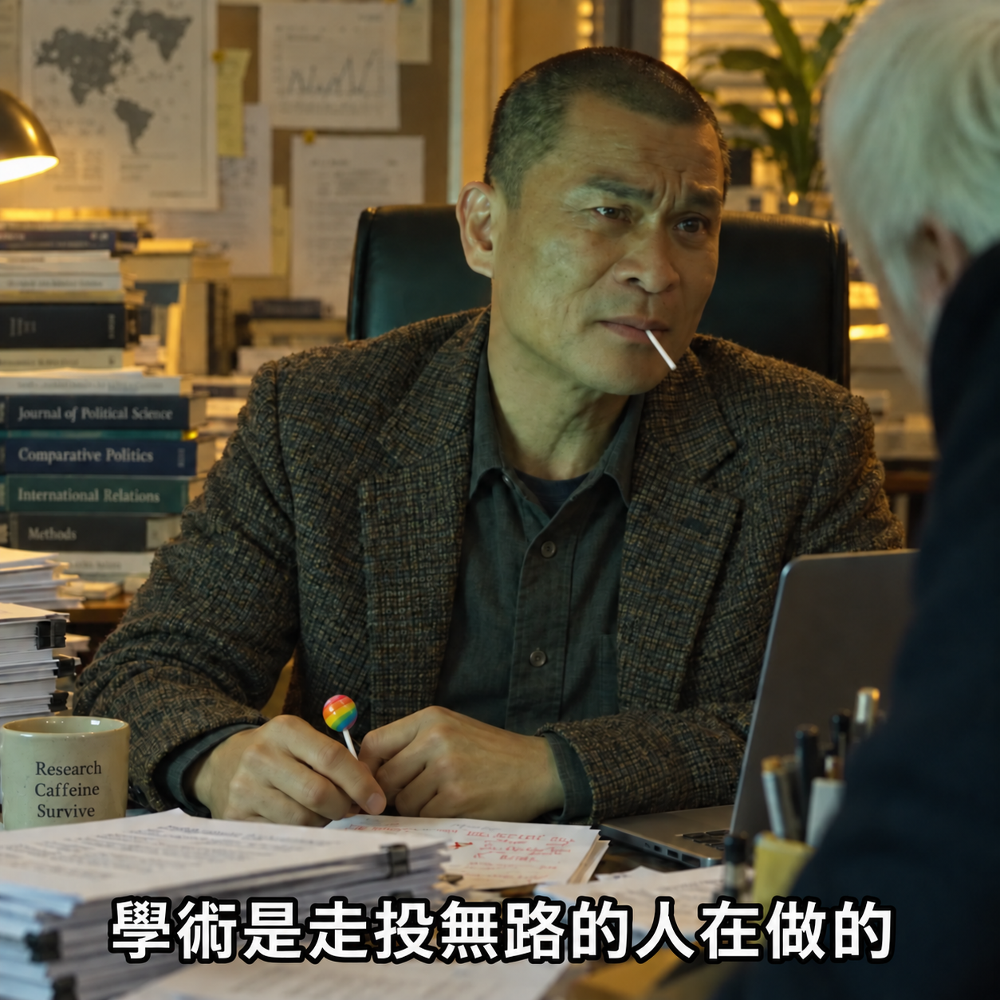

高齡者身體活動與健康促進
以穿戴式裝置客觀測量長者的 24 小時活動組成，分析其與衰弱、肌少症、認知與心理健康之關聯，提出合宜的活動安排。
臺北醫學大學 · 助理教授
我是賴鼎富，目前在臺北醫學大學擔任助理教授，研究高齡健康、身體活動與資料科學。我常說，學術是走投無路的人在做的。（目前還在做。）
HEALTHY AGING / MOVEMENT BEHAVIORS / DATA SCIENCE

從大三當研究助理開始，一路讀到博士、到韓國釜山做研究，再回臺灣。最初的動機很實際：有工作、有收入，不會的就學。後來在整理資料、跑分析、寫論文的過程中，慢慢發現自己好像適合做研究，於是做到現在。
平常關心長輩一天怎麼動、怎麼坐、怎麼睡，以及這些日常行為和肌力、認知、健康老化的關係。主要使用穿戴式裝置與統計分析，把多動一點對身體好問得更仔細。（問到後來，連幾點動都要研究。）
研究一路走來，受到許多老師、同事與合作團隊的幫助。至於所有我擔任第一作者或共同第一作者的文章，都是我自己從頭寫到尾；每一輪修改、每一點審查意見，也都是自己一路處理到最後。所以這些文章如果想深入討論，從研究怎麼做、結果怎麼解讀，到為什麼改成現在這樣，我都蠻有把握；其他篇也歡迎問，我會盡量努力，必要時再找共同作者一起討論。（感謝審查委員的寶貴建議是我打的，後面幾頁回覆也是。順帶一提，近視已經超過 500 度，論文有時候也看不仔細，遠方更是不太清楚。）
學術這條路：與分母對話 ↘01 / RESEARCH FOCUS
從身體活動出發，結合量化方法與跨域合作，探索健康老化的可能。
以穿戴式裝置客觀測量長者的 24 小時活動組成，分析其與衰弱、肌少症、認知與心理健康之關聯，提出合宜的活動安排。
運用等時替代分析、組成資料分析與機器學習模型，將觀測資料轉為風險預測與成本效益評估，設計可落實的介入方案。
結合臨床醫學、公共衛生與環境科學，並與韓國、日本團隊合作進行跨國比較，集思廣益、相得益彰。
02 / THE APPROACH
03 / FUNDED RESEARCH
主持國科會專題研究計畫，探索高齡健康與退休銜接。
NSTC
2026—2029
國家科學及技術委員會
計畫主持人04 / PUBLICATIONS
依年份瀏覽學術著作，或以主題與關鍵字尋找感興趣的研究。
正在載入論文…
05 / BEYOND THE JOURNAL
媒體報導與研究亮點
MY ACADEMIC JOURNEY

我常說學術是走投無路的人在做的，真要交代自己怎麼走到這裡，還是得寫得比這句話長一點。
履歷上可以很簡單：學士、博士、釜山研究教授、回臺當博士後，然後是助理教授。中間則包括讀文獻、整理資料、投稿被拒絕、面試後沒下文，以及以為快有結果了，才發現還有下一個坑。（履歷通常只列職稱，沒有列中間要熬多久時間。）
能走到今天，有自己的投入，也有指導教授的引薦、合作團隊的支持、能夠使用的資料，以及剛好出現的機會。這些條件都很重要，所以我會提醒自己：分享經驗時，要記得那些同樣努力，最後卻沒有出現在教職名單上的人。
我把這段經歷整理成〈30 歲當助理教授：與分母對話〉，寫下走過的路、付過的成本，以及哪些做法可以參考、哪些條件很難複製。努力不一定有收穫；累了、想換條路，也都可以。
閱讀完整學術歷程：30 歲當助理教授，與分母對話 ↗06 / BACKGROUND
依履歷精簡整理，便於閱覽與檢索。
國立臺灣師範大學｜博士
健康促進與衛生教育學系（逕讀）
2019/06 – 2023/10
國立臺灣師範大學｜學士
健康促進與衛生教育學系
2014/09 – 2018/06
臺北醫學大學 高齡健康暨長期照護學系｜助理教授
2026/02 起
釜山國立大學醫院 生物醫學研究所｜客座研究員
在職
銀髮方舟照護集團｜長照顧問
至 2026/07
國立臺灣師範大學 運動休閒與餐旅管理研究所｜博士後研究員
2025/02 – 2026/01
臺北市立大學 運動教育研究所｜兼任助理教授
2025/08 – 2026/01
釜山國立大學醫院 生物醫學研究所｜研究教授
2024/02 – 2025/01
國立臺灣師範大學｜專／兼任研究助理
2020/08 – 2024/01